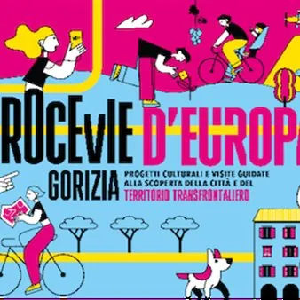

da dom 7 giu a sab 17 ott
Crocevie d'Europa - "Itinerari Basagliani"
Il programma che si propone per questa quarta edizione, vuole fornire nuove e diverse angolazioni e punti di vista con cui guardare al territorio, alla sua storia e soprattutto alle sue potenzialità, portando i visitatori lungo percorsi qualche volta inediti e spesso poco…
 Indicazioni
Indicazioni
- Costi e prenotazioni
- Costo non indicato · Prenotazione non indicata
- Programma
- Programma da verificare. Apri la fonte ufficiale per orari e possibili aggiornamenti.
- In caso di maltempo
- Nessuna indicazione specifica pubblicata.
- Note
- Acquisito automaticamente dalla fonte.
L’EVENTO
Descrizione completa
Il programma che si propone per questa quarta edizione, vuole fornire nuove e diverse angolazioni e punti di vista con cui guardare al territorio, alla sua storia e soprattutto alle sue potenzialità, portando i visitatori lungo percorsi qualche volta inediti e spesso poco conosciuti, valorizzando il lavoro di ricerca e di cura del territorio e delle tracce di memoria che porta con sé, opera di molte associazioni ed enti.
Gorizia, Nova Gorica e il territorio transfrontaliero svelano così sé stessi e i loro tesori, spesso nascosti, intrecciati in una storia millenaria, attraverso una immersione a tutto tondo nella loro originale e plurima bellezza.
"Itinerari Basagliani" è un progetto de La Collina cooperativa sociale Onlus che offre visite storico culturali immersive nel Parco
Basaglia di Gorizia, negli spazi che hanno ospitato la genesi della rivoluzione basagliana e che ancora oggi ne sono memoria.
I due percorsi proposti, sviluppati assieme al Comune di Gorizia nell’ambito del progetto La città dei matti, si sviluppa attraverso diverse tappe delimitate da installazioni interattive a grandezza naturale dotate di QR code. Con l’accompagnamento di una guida, i partecipanti potranno accedere a contenuti multimediali - tramite il proprio smartphone o i tablet dati in dotazione durante la visita - che approfondiscono i luoghi visitati.
ore 10.00 - Percorso dei diritti
La visita racconta la vita nell’istituzione totale e il processo di deistituzionalizzazione introdotto da Franco Basaglia, mettendo al centro i diritti negati e la loro progressiva affermazione. L’itinerario non si limita alla proposta di contenuti multimediali, ma si anima anche del dibattito dei partecipanti, che, attraverso spunti e suggestioni, permettono una riflessione tra passato e presente.
ore 14.00 - Percorso Società
Il percorso va oltre il naturale esaurimento delle fonti storiche disponibili dell’archivio dell’ex OPP di Gorizia, proponendo un dialogo tra la storia del parco e le trasformazioni della società contemporanea. Le tappe si costruiscono a partire da brevi contenuti creati per avviare il dialogo tra i partecipanti, vero motore dell’itinerario. Si tratta inoltre del primo percorso che offre a ogni partecipante un voucher gratuito per la fruizione di approfondimenti tematici da casa.
Le visite verranno riproposte sabato 17 ottobre 2026
Ritrovo: in via Vittorio Veneto 174
Durata: 1 ora e mezza
In lingua italiana
La passeggiata verrà riproposta il 7 novembre 2026
PROGRAMMA COMPLETO
Partecipazione gratuita con prenotazione obbligatoria: crocevie.europa@gmail.com, Whatsapp 335 7707746
IL PROGRAMMA
Programma e orari
Appuntamenti raccolti dalle fonti elencate. Dove manca un orario, non è ancora disponibile in questa scheda.
Programma pubblicato
- ore 10.00 - Percorso dei diritti
- ore 14.00 - Percorso Società
INFORMAZIONI UTILI
Prima di partire
- Controllare la fonte prima di partire.
ORGANIZZAZIONE